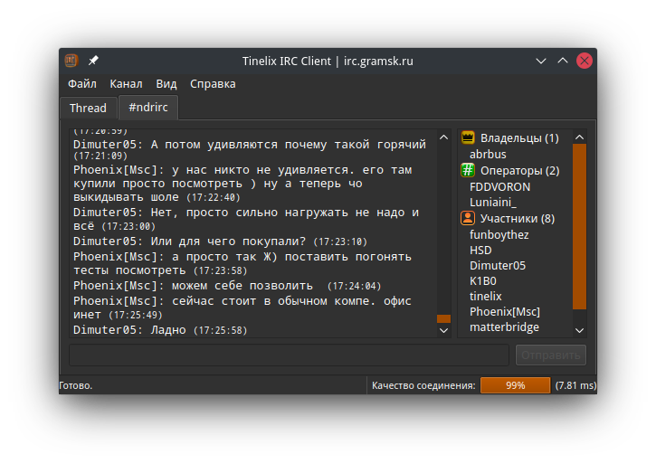

Итак, как и Veselcraft, который, кстати, возился с Escargot-клиентом на JavaScript, я решил создать нечто подобное, но теперь уже IRC-клиент на Python. Отмечу, что здесь используется фреймворк Qt 5 и пакеты - PyQt5 - реализация Qt 5 на Python, cryptography для шифрования паролей) и configparser (для файла настроек, подобно *.ini формата) и стандартные библиотеки Python 3. Подключается к IRC-серверу через модуль socket. Клиент поддерживает пять кодировок - UTF-8, Windows-1251 (для gramsk.ru это актуально), DOS 866, KOI8-R и KOI8-U.

Репозиторий IRC-клиента с открытым исходным кодом (лицензия: GNU GPL 3.0)
Портативные версии Tinelix IRC Client
Скажу на всякий случай: чтобы запускать скрипт flight.py, скачиваем интепретатор Python (версия 3.7 и посвежее подойдет). Желательно, при этом указываем параметр Add to PATH, и скачиваем через cmd или терминал недостающие пакеты через pip3. Например, pip3 install [пакет]. Проверить можно в самом начале файла flight.py.
Предупреждение: Запускать нужно скрипт flight.py, потому что остальные скрипты не работают, но они нужны для составления форм и диалогов графического интерфейса.